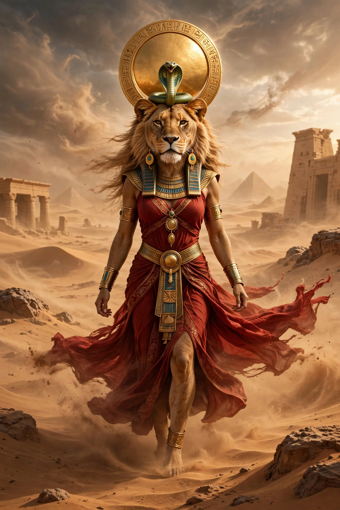

From Wikipedia, the free encyclopedia
| Sekhmet | |
|---|---|
| Affiliation | Egyptian mythology; goddess of war, plague and healing |
| Depicted as | Lioness, or woman with a lioness's head crowned by the sun disc |
| Consort | Ptah (at Memphis) |
| Son | Nefertem |
| Role | The fierce Eye of Ra; sender and averter of plague |

Sekhmet (from Egyptian sekhem, "power") is the lioness goddess of war, plague and healing in Egyptian mythology — "the Powerful One", the most terrifying form of the Eye of Ra. Where Bastet is the Eye appeased, Sekhmet is the Eye unleashed: her breath was the desert wind, her arrows brought pestilence, and armies went to war in her name. Yet the same power that sent disease could withdraw it, and her priests formed one of ancient Egypt's medical orders.
In the myth preserved in the Book of the Heavenly Cow, the aged Ra, hearing that humankind plotted against him, sent his Eye — as the goddess Hathor, becoming Sekhmet — to punish them. She slaughtered so relentlessly that she waded in blood and could not be recalled; to stop her, Ra had seven thousand jars of beer dyed red with ochre poured over the fields. Mistaking it for blood, Sekhmet drank, became drunk, and woke pacified — as the gentle Hathor. The myth was retold yearly in drunken festivals of appeasement, and it fixes Sekhmet's essential character: destruction that overshoots until it is soothed.
At Memphis she was the wife of Ptah and mother of Nefertem, forming the Memphite triad. Amenhotep III set up hundreds of granodiorite statues of her — some seven hundred are known — in his mortuary temple and at Karnak, apparently as a vast litany in stone, one for every day and night of the year, to keep her perpetually appeased. Her priests, the wab-priests of Sekhmet, were renowned as physicians and surgeons, and the great medical papyri were connected with her cult; to be "skilled as a priest of Sekhmet" was a doctor's boast.
Egyptian mythology · Bastet · Ra · Thoth · Anubis